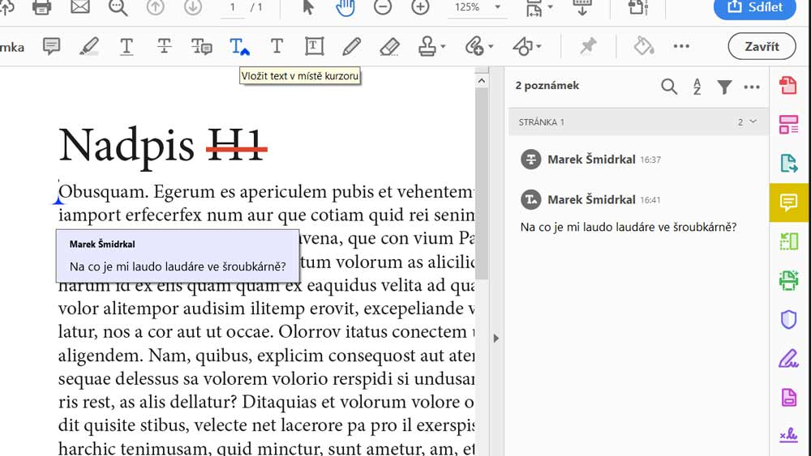
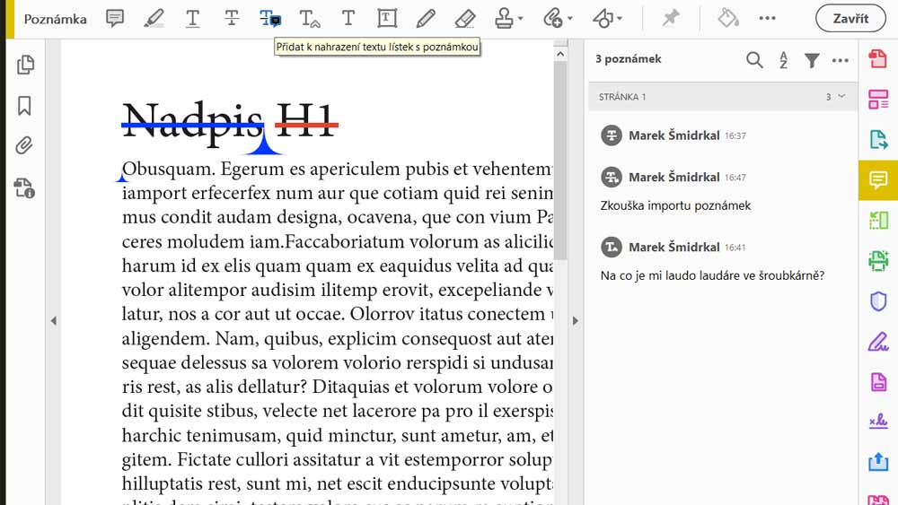

Měl jsme příležitost vyzkoušet tuhle fičuru v praxi a osvědčila se na výbornou. Bylo akorát potřeba poučit korektora, jak správně opravy zanášet, aby se změny v textu zanášely již téměř automaticky. Stačí na to Acrobat Reader, který je na webu Adobe zdarma ke stažení.
InDesign 2019 (v 14.0.1)
Jak to tedy funguje? Klient od nás dostane pdf jako vždy a do něho zanese korekturu. Pokud se mají měnit texty, tak je zapotřebí, aby na to použil správné nástroje.
Pokud se má nějaký text smazat, použije nátroj přeškrtnout text. Pro vložení textu do již existujícího rámečku slouží nástroj vložit text v místě kurzoru. A pro nahrazení textu, což je v podstatě kombinace dvou předcházejících nástrojů je určen nástroj přidat k nahrazení textu lístek s poznamkou. Na ostatní korektury poslouží klasický lístek s poznámkou.
Text, který má být odstraněn, se používá v Acrobatu nástroj přeškrtnout text.
Pro přidání textu slouží nástroj vložit text v místě kurzoru.
Pro nahrazení textu se používá nástroj s kostrbatým názvem přidat k nahrazení textu lístek s poznamkou.
Korigované pdf pošle klient zpět a teď přichází hlavní změna. V souboru InDesignu, ze kterého jsme exportovali pdf použijeme nástroj importování poznámek souboru pdf a po importu se poznámky přenesou rovnou do sazby.
Poznámky se naimportovaly přímo do InDesignu.
U textových úprav stačí v okně nástroje klikat na Přijmout a texty se již upravují sami. Je potřeba akorát kontrolovat, jestli se upravují správně. Když jsem přidával zkušební poznámky do pdf, chtěl jsem, aby se na začátek první odstavce přidala věta. Bohužel se přidala do nadpisu, takže tam se bez dalšího ručního zásahu neobejdeme. Žlutý lísteček nese poznámku, aby byla přidána fotografie. To už musíme udělat ručně.
Texty se upravují po kliknutí na tlačítko 'přijmout' automaticky.
Ještě musíme dát pozor na jednu věc. Pokud budeme po odeslání pdf ke korektuře hýbat s textovými rámečky, tak při importu se poznámky zobrazí jako nenamapované a úpravy textu budeme muset dělat ručně.